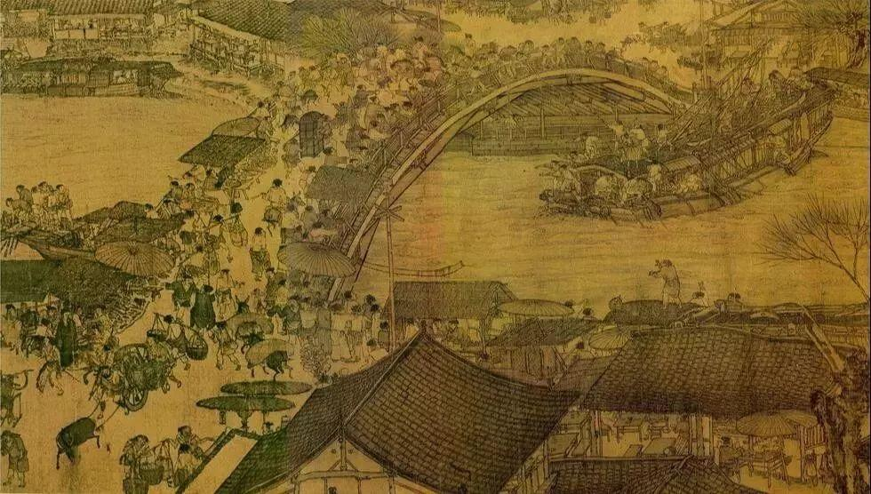
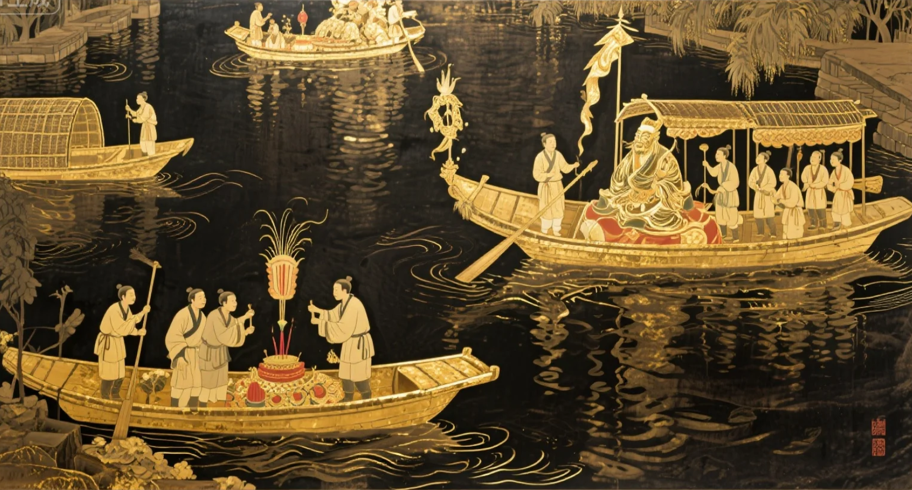
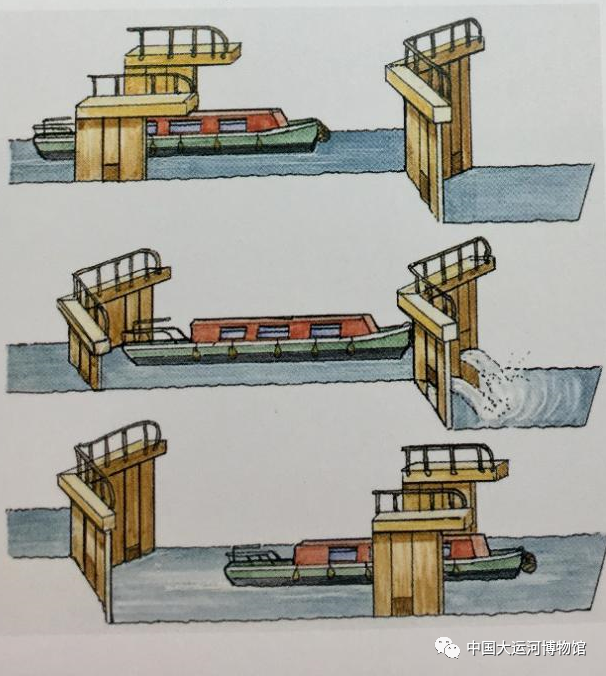

文学艺术

著名文学作品：
"汴水流，泗水流，流到瓜洲古渡头。吴山点点愁。" —— 白居易《长相思》
白居易《隋堤柳》、柳永《望海潮》、《红楼梦》、《水浒传》……
艺术形式：
《清明上河图》描绘运河繁华、扬剧、淮剧等地方戏曲、运河沿岸的书法碑刻……民俗风情

传统节日与庆典：
开漕节、船工祭祀河神仪式、运河龙舟赛……饮食文化：
淮扬菜系、杭帮菜系、特色船菜、南北风味融合……民间信仰：
河神崇拜、龙王庙祭祀、祈求航行平安建筑遗产

从古到今，探索世界上最长、最古老的人工水道所承载的丰富文化内涵
"汴水流，泗水流，流到瓜洲古渡头。吴山点点愁。" —— 白居易《长相思》
白居易《隋堤柳》、柳永《望海潮》、《红楼梦》、《水浒传》……